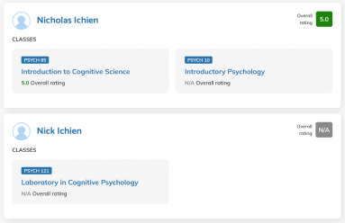
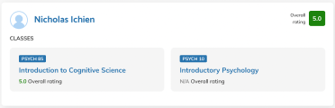
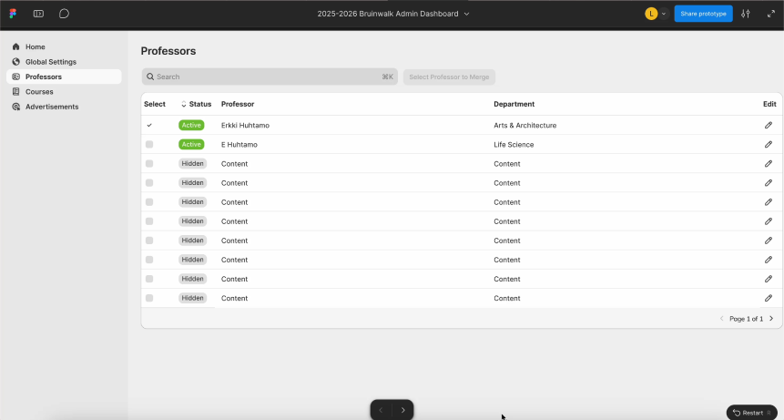
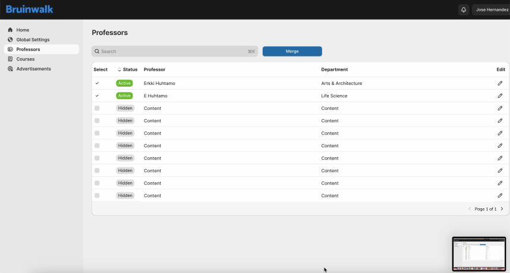
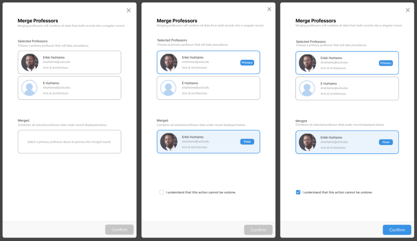
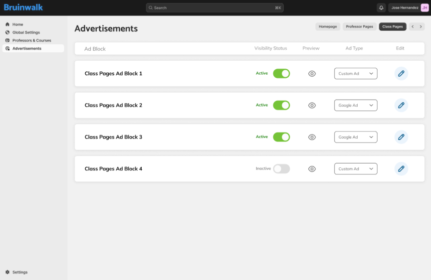
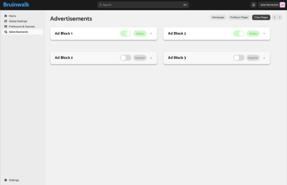
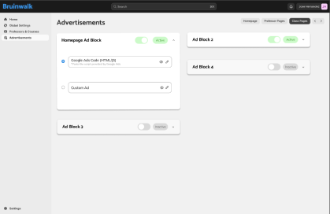
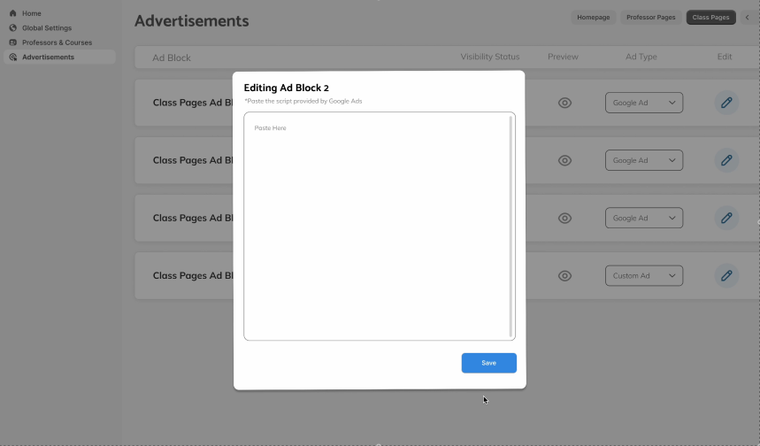
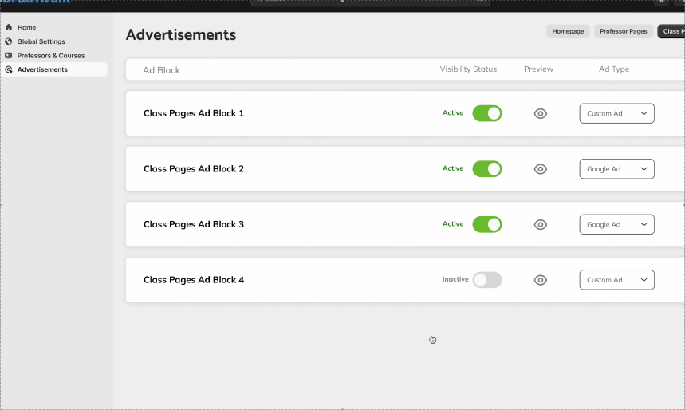

Bruinwalk Admin Dashboard
Designed Bruinwalk’s internal admin dashboard so non-technical staff can merge duplicate professor records and manage ads without writing code.
Overview
Bruinwalk is the primary class-planning platform for thousands of UCLA students. As a UI/UX Designer, I worked in the creation of its new internal admin dashboard, building management systems for advertisements and professor data.
Bruinwalk serves thousands of active students, and the internal tools used to maintain it were not sufficient in keeping up with student reviews and new data because site management required technical knowledge.
Because the system was so high friction, it cost a lot of time for the administrative team.
Professor Merge Feature
The feature that was needed was an admin tool to merge two professor variables into one instance. Many users complained that the site often had two different instances of the same professor causing reviews to be fragmented.

Nicholas Ichien also has an instance of Nick Ichien in the site.

This tool will combine both Instances of Professor Ichien into one.
Understanding the Users
Before starting, I identified some key pain points through interviewing the current site managers and watching them talk through their current flow. Here are some key takeaways.
Insights
High Risk of Error: Admins hesitated to update or merge professor records due to a lack of clear safeguards, causing them to fear making irreversible changes on the live site.
Stale Data: Because the workflow was high-friction, updates were delayed, leading to outdated professor pages.
This feature was a high risk feature because merging the two instances together could potentially erase a lot of old data. However, the merging system would also need to be quick because there are a lot of professors to get through since the site gets filled with double instances.
Designing a Solution
Because of these considerations I focused my design on:
- Clear Interaction labeling, making sure users know the exact downstream impact of their changes before confirming.
- A fast four step process to make sure users can update records quickly, while introducing just enough intentional friction to prevent accidental changes.
- Contextual Safeguards: Implementing visual confirmation states before executing data changes, giving users confidence and immediate feedback when handling high-stakes functions.
Prototypes
Select Two or More Professors to Merge
In order to merge professors, users need to select the professors they want to merge which will then activate the merge tool.

Merge Mode
Before the professors merge is finalized, users will see a panel that guides them through the process.

Merge Flow
Users first select a primary professor instance, next the tool presents a visual confirmation of the outcome, then the user must check a box to ensure they are fully certain about their decision. Finally the user confirms the merge, and the two instances become combined throughout the site.

Advertisement Management Feature
For this project I was tasked with designing an interface for managing ad monetization for the Bruinwalk. Bruinwalk runs off of Google AdSense which requires any ad updates to be made by editing the website’s HTML.
This system runs into the same issue as the professors page; most Bruinwalk admins do not come from a technical background.
Designing a Solution
This feature required a quick turn around, so I jumped straight into Figma. I made sure to check in with users for feedback as I was designing.
Advertisement Dashboard
I created a page to see all of the active advertisements in one place. Each advertisement has its own row where I chose to let users toggle advertisements on and off, preview, choose the type of ad displayed, and edit the ad.

Other Dashboard Explorations
Before settling on the final design, I explored a card-based layout. Each ad block became a small, expandable card, which I hoped would make the page feel less informationally dense. I ultimately chose the row view for two reasons: expanding cards added an extra click to every task, and collapsed cards didn’t give first-time users enough context to understand what each ad block was.

Collapsed Card

Expanded Card
Editing Modals
I designed custom ad editing modals with a focus on making changing and editing ads as low friction as possible for a non-technical user
Google Ads Flow

Custom Ads Flow

Results and Reflection
Building these tools taught me that good design is good translation. By hiding Google AdSense’s HTML requirements and the database risks of merging records behind intuitive interfaces, I helped a non-technical admin team do highly technical work with confidence. Internal tools should be designed with the same empathy as student facing products. Admins shouldn’t have to feel like they are lacking a skill. Once the dashboard showed admins exactly what they needed, they could do work they used to avoid.